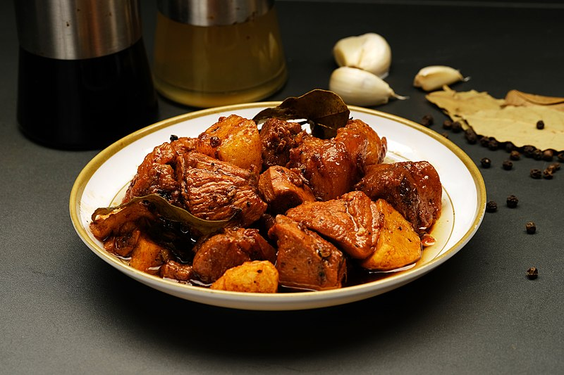

Adobong Manok

Description
Adobo is a Filipino dish of chicken or pork stewed in vinegar, garlic, soy sauce, bay leaves, and peppercorns
Ingredients
Steps
- Heat oil in pan and saute garlic and onions
- Then add chicken to the pan and sear on all sides, until you have a little browning in the chicken skin.
- Pour in vinegar, soy sauce and water.
- Add bay leaves, pepper and Knorr Chicken Cubes.
- Bring to a boil over high heat then reduce hear to simmer, but do not cover the pan. Continue to simmer for 10mins.
- Remove the chicken pieces from sauce and fry in another pan until nicely browned.
- Put back fried chicken pieces into sauce.
- Add sugar and let simmer again for another 10 minutes or until sauce has thickened.
- Serve warm.